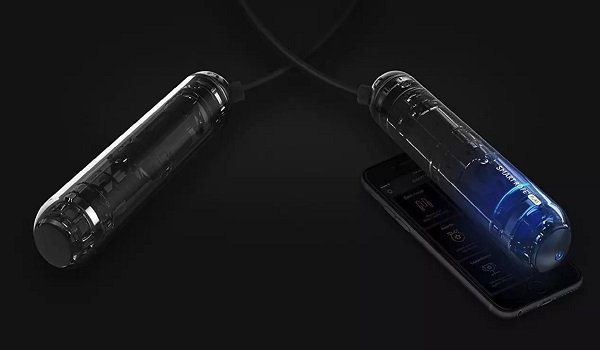

Прыжки со скакалкой – это полноценный вид спорта, он приносит много преимущества в нашей повседневной жизни. Тренировка со скакалкой эквивалентна беговой тренировке. Тренировка со скакалкой укрепляет мышцы нижней части тела, улучшает кровообращение в нашем теле, т.к. это тренировка сердечно-сосудистой системы. Для людей, которые много часов работают сидя, идеальны занятия со скакалкой, для того чтобы избежать отеков лодыжек, ступней или общей боли в нижних конечностях. Это довольно компактный инструмент, у нас есть возможность взять его куда угодно в чемодане или сумке.
«Умные веревки» или «умные скакалки» включают некоторые очень интересные функции как для профессионалов, так и для пользователей-любителей:
Они отслеживают количество вращений, которые мы делаем за тренировку.
Записывает оценку количества сожженных калорий, прогресса активности и времени тренировки.
Все данные отправляются на смартфон или планшетный компьютер и записываются в отдельном приложении для каждой модели смарт-веревок. Большинство моделей совместим с операционной системой Android или iOS.
Некоторые модели включают в себя светодиодные фонари на самой веревке, чтобы при повороте видеть изображение или счетчик физической активности.
Другие в своем приложении предлагают различные режимы тренировок и задачи, которые позволят улучшить тренировки.
Самая дешевая модель - это умная скакалка с маленьким экраном, на котором будет отображаться 3 различных спортивных режима, а также количество имеющихся петель и время тренировки. Она связана с телефоном через Bluetooth и позволяет отслеживать количество прыжков за тренировку, сожженные калории и физический прогресс. Веревка с максимальной длиной 300 см, которую можно легко отрегулировать, а также имеет внутреннюю батарею, которой хватит на 30 дней использования.
Самая продвинутая веревка доступна в нескольких цветах и включает 23 светодиода по всей длине троса. Свет, которым будет светиться скакалка, позволит использовать ее в любой ситуации и в любое время. Канат веревки изготовлен из высокопрочного полиуретана со стальным тросом внутри для усиления и улучшения использования, а также покрыт ПВХ-пластиком для увеличения его прочности. Программа, установленная на смартфоне или планшетном компьютере может сохранить до 100 различных сессий. «Умное устройство» включает в себя батарею, которой хватает на 45 часов активных упражнений.
Скакалки спроектированы и выполнены надежно, пользоваться ими приятно и удобно. Мягкая и плавная прокрутка на любой скорости, достаточно мягкая основная часть, можно выполнять различные трюки (крест-накрест). Приложение для них простое и понятное. Оно «заточено» под мотивацию: награды, соревнования с друзьями, прыжки на время, общемировая таблица. Снаряд достаточно простой сам по себе с очень ограниченным набором возможностей для тренировок, и чтобы прыжки не наскучили требуется постоянный «возврат» в приложении и к тренировке за счет небольших хитростей в виде виртуальных соревнований. Данные подвязаны к идее ЗОЖ, контроля за фигурой, похудению. Для отдельных функций (соревнование с друзьями) требуется авторизация через социальные сети.
